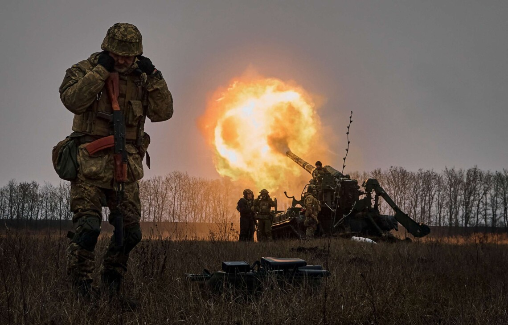

Головна
Передумови війни
Війна на сході України (війна на Донбасі) — фаза російсько-української війни, що розпочалася у квітні 2014 року, коли російські війська вторглися в український регіон Донбас після захоплення Криму російською федерацією, низки проросійських протестів в Україні та проголошення "державного суверенітету" ДНР і ЛНР. Конфлікт мав міжнародний характер. З точки зору географічного охоплення, він був на - частині Донецької та Луганської областей України.

Незважаючи на те, що у війну вступили російські війська, і незважаючи на численні докази участі росії у війні, росія офіційно не визнала вторгнення в Україну, а українська сторона вважала війну неоголошеною до 24 лютого 2022 року. Деякі українські політики називають війну на сході України "гібридною війною", розв'язаною росією проти України. Юридично Антитерористична операція (2014-2018) та Операція об'єднаних сил (ООС) тривають на сході України до 24 лютого 2022 року. Але російська влада неодноразово висловлювала своє неприйняття антитерористичної операції, вимагаючи її завершення та початку переговорів зі збройними силами [1, 2].
Артобстріли [289]
Вороже вторгнення в Україну, яке розпочалося о 3:40 ранку в четвер 24 лютого 2022 року, стало відкритим військовим нападом російської федерації (рф) на Україну, третім етапом російсько-української війни, розв'язаної росією в 2014 році, в якій росія намагалася заперечувати свою участь. У резолюції від 2 березня 2022 року Генеральна Асамблея ООН засудила дії росії, назвавши їх агресією проти України; 16 березня 2022 року Міжнародний суд ООН у Гаазі зобов'язав росію припинити військові дії в Україні, що розпочалися 24 лютого 2022 року.
Військова кампанія розпочалася з тривалого нарощування російських військ уздовж кордонів України з росією та Білоруссю з листопада 2021 року та визнання російською владою 21 лютого 2022 року терористичних організацій на території України, так званих "ДНР" і "ЛНР", державними організаціями. Різні ЗМІ, західні країни та українські політики неодноразово інтерпретували нарощування російських військ біля українського кордону з листопада 2021 року як підготовку росії до війни з Україною. російські офіційні особи послідовно заперечували, що росія має будь-які плани чи наміри напасти на Україну. Майже одночасно російські федеральні сили почали відкрито розгортати додаткові війська на окупованих територіях Донецької та Луганської областей [3].
У березні-квітні 2021 року росія збільшила свої сили поблизу російсько-українського кордону, а в період з жовтня 2021 року по лютий 2022 року - на території росії та Білорусі. Члени російського уряду неодноразово заперечували будь-які плани нападу на Україну. За повідомленнями, рішення про вторгнення в Україну було прийнято путіним і його оточенням, зокрема радником з національної безпеки Миколою Патрушевим і міністром оборони сергієм шойгу [4, 5].
У грудні 2021 року росія висунула низку претензій до Заходу, звинувативши його в нібито "розширенні НАТО" і вимагаючи від Заходу вивести свої війська та озброєння з колишніх країн Східного блоку, щоб відновити військовий і політичний вплив колишнього Радянського Союзу. Зокрема, вона вимагала гарантій позаблоковості з НАТО і відмови від прийняття західної зброї, а також погрожувала безстроковою військовою відповіддю, якщо ці вимоги не будуть повністю виконані; НАТО відкинуло ці вимоги як необґрунтовані, а США попередили росію, що будь-яка подальша агресія проти України буде зустрінута "швидкими і жорсткими" економічними санкціями. суворими" економічними санкціями у разі подальшої агресії проти України [6].
О 03:40 ранку 24 лютого 2022 року російські танки вторглися в Україну в Луганській області. Незадовго до 05:00 за українським часом путін оголосив про своє рішення розпочати військову операцію на сході України. Через кілька хвилин після оголошення війни росія обстріляла крилатими і балістичними ракетами аеродроми, військові штаби і склади в Києві, Харкові, Івано-Франківську, Луцьку, Дніпрі та Василькові. У Києві, Харкові, Одесі та на Донбасі сталися вибухи. У перший день повномасштабного вторгнення росіяни буквально підняли в повітря все. У першій хвилі атак було задіяно 350 винищувачів, кількість вильотів досягала 140 на день, а глибина вторгнення сягала 300 км від лінії фронту [3].
Початок вторгнення
Хронологія 24 лютого - що врятувало Україну? Вторгнення 2022 [286]
1 березня російські війська обстріляли Овтирку, знищивши військові частини і вбивши багато українських солдатів. Обстріли Харкова тривали. Шторми на Чорному морі завадили висадці російського десанту під Одесою та Миколаєвом. У Краснопіллі відбувся перший обмін військовополоненими. Розпочалася евакуація мирного населення з Волновахи Донецької області. Тоді російські війська почали фізично знищувати українські комунікації, обстрілявши телевежу в Києві та тимчасово припинивши телевізійне (і радіо) мовлення. Ворожі снаряди загрожували меморіалу жертвам Бабиного Яру. Водночас окупаційні війська зіткнулися з нестачею продовольства і високоточних боєприпасів та перебоями в їх постачанні" [3].
На початку 2023 року основні бойові дії розгорнулися в передмісті Бахмута - Донецької області. Протягом цього часу російська сторона неодноразово заявляла про контроль над містом. Напередодні Нового року росія завдала ракетного удару по Україні, щоб порушити постачання електроенергії, але не змогла завдати очікуваної шкоди. Також відбулася низка менших атак на цивільну інфраструктуру: 18 січня в авіакатастрофі в Броварах загинув високопосадовець Міністерства внутрішніх справ України [7,8].
19 січня Європейський парламент прийняв резолюцію про створення спеціального суду над вищим керівництвом росії та Білорусі за збройну агресію проти України [9].
У січні та лютому український уряд очікував посилення російського наступу. Бахмут залишався найгарячішою точкою на всій лінії фронту. Через непідготовленість до наступу втрати російських військових у лютому значно зросли: 26 лютого українські військові підтвердили, що російський літак-розвідник А-50У був збитий білоруськими партизанами на аеродромі Мачурищі. Літак вів радіолокаційну розвідку з метою здійснення ракетних та безпілотних ударів по Україні. Україна успішно придбала танки "Леопард-2" [10, 11, 12].
Український контрнаступ у 2023 році
У першій половині травня українські війська почали флангову облогу, захищаючи західну околицю Бахмута. Кордони часто змінювалися; 3 травня кремль зазнав атаки з безпілотників. Хто атакував президентський палац держави-агресора, наразі було невідомо. Україна отримала ракети великої дальності (понад 250 км) Storm Shadow. З надходженням західних систем протиповітряної оборони Україна посилила свою здатність відбивати російські повітряні атаки. Атаки на кілька міст були повністю відбиті [13, 14].
Вранці 6 червня російські окупаційні війська підірвали Каховську гідроелектростанцію в Херсонській області, що спричинило затоплення населених пунктів у пониззі Дніпра [15].
Коротко про головне
24 лютого 2024 року виповнилося два роки відтоді, як російська федерація розпочала повномасштабне вторгнення в Україну. Відтоді минуло 24 місяці, понад 104 тижні та 730 днів. Президент Володимир Зеленський записав 713 вечірніх промов, в Україні змінилося 10 міністрів, Генеральний штаб опублікував 1460 зведень, Суспільне зібрало основні цифри дворічної війни а російська федерація вже понад два роки бере участь у вторгненні в Україну [16].
За даними порталу Air-alarms.in.ua, з початку повномасштабного вторгнення (станом на 10:00 24 лютого) в Україні було оголошено 39931 повітряну тривогу. В Україні було змінено десять міністрів. Відбувся 51 обмін полоненими. Відбулося дев'ятнадцять конференцій Rammstein та п'ять самітів ЄС. Крім того, українські сили ліквідували понад 409 000 російських солдатів [16].
Допомога військовим
ruhednosti.org(Міжнародний Рух Єдності)
prytulafoundation.org(Благодійний фонд Сергія Притули)